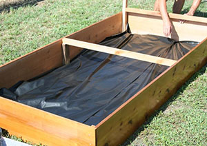

Det skal du bruge
 Gødning
Gødning
Jord
 Muld
Muld
 Højbed
Højbed
 Spagnum
Spagnum
 Træfils
Træfils

Et højbed er rigtig god ide hvis du vil danne afgrænsninger i f.eks. køkkenhaven eller mellem køkkenhaven og din resterende have.
Ud over at give niveauforskel i haven, giver et højbed dig også en bedre arbejdsstilling, når du arbejder i bedet eller høster bær og planter.
Kendetegnede ved højbede er, at de er bygget ca. 40 cm. over almindelig jordniveau. Det betyder at et højbed hurtigere bliver tørt og varmt efter vinterens fugt og kulde. Derved kan du så tidligere i dem end i almindelige bede i jordniveau.
Gode tips til anlæggelse af et højbed
Før du anlægger et højbed
Du bør sikre hjørner og kanter med en solid, lodret afstivning. Træet du bruger til afstivning bør gå lige så langt ned i jorden, som bedet er højt. Dette er for at sikre at bedet er så stabilt som muligt. Er bedet for eksempel 50 cm. højt, skal afstiverne gå 50 cm. ned i jorden. Hvis du anlægger dit højbed et sted hvor der i forvejen er græs, bør du fjerne græsset inden du fylder jord i bedet. Derved undgår du problemer med græs og ukrudt senere.
Brug ikke trykimprægneret træ
Trykimprægneret træ er ikke velegnet til at lave højbede af, da træet indeholder for giftige stoffer, som afgives til jorden og planterne. Brug gerne fyrretræ eller grantræ som begge er meget velegnet til at bygge højbed af.
Brug rigeligt jord i højbedet
Når du anlægger et højbed er det vigtigt at du benytter rigeligt med jord. Jorden synker nemlig sammen over tid. En god allround muld til højbedet hedder "gartnermuld". Gartnermuld er et blandingsprodukt af almindelig muldjord, bakkesand og lantidsmodnet parkkompost. Du kan naturligvis også benytte specialblandet højbedsmuld.
Den rigtige jord til et højbed
Komposten, som anvendes i højbedsmuld, er modnet i mere end 2 år. Det giver et indhold af meget stabilt humus. Tilførsel af stabilt humus giver jorden en god evne til at holde på fugten i tørre perioder, uden at den derved mister sine dræningsegenskaber. Indholdet af sand gør, at din jord er let at arbejde med, uden at den danner knolde. Heller ikke i perioder med megen regn.